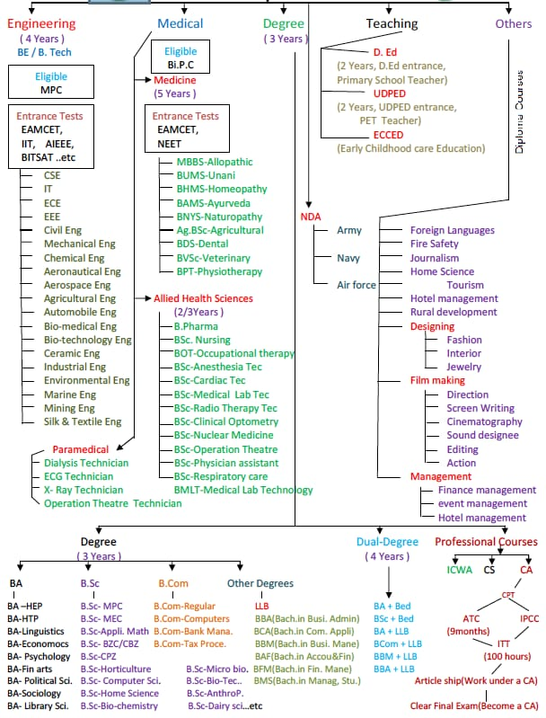

Home/page
After the completion 12th so meny student's are worried about one common question WHAT ARE THE COURSES AFTER 12th ?....
If you wants answer to these question this article help you to show all career options after 12th and will guid you about courses after 12th what can you do after your class 12th exam .
Acording to a some news article yearly 4,23,455 students.
Before proceeding further let’s see the type of course available in India after class 12 .
What Next ? After Intermediate
When you are in class 12 all most all students are worried about his/her future and searching for the better career option . but before that one must understand these are so many career options after 12th are available in India that he or she can pursue his career which suited you the most .
As mentioned in the above type of career options after 12th you can see there are more than 113 career options after 12th are available in India to make your career in the respective field.
Factor-1:- At first you must have a clear vision over your area of interest.In this area you must check your prime goal in life.For example, if engineering is passion there are more than 58 branches in which you can make your career its again depends on your interest.Similarly if medical in your area of interest than also apart from MBBS there are several areas in which you can make a chose depending upon your area of interest.
Factor-2:- you must have one are to choose your career options like if you are science humanity or commerce students based one that you have select your area of interest.While making the right choice it start from your class 12 subjects and then slowly narrow down to the particular option which suites you the best . never try to find out what will I earn if I select the particular are for my future always work and choose your area of interest if you find your interest in a particular field than try make it your chose for your future plan and that will be the best career options after 12th for you.